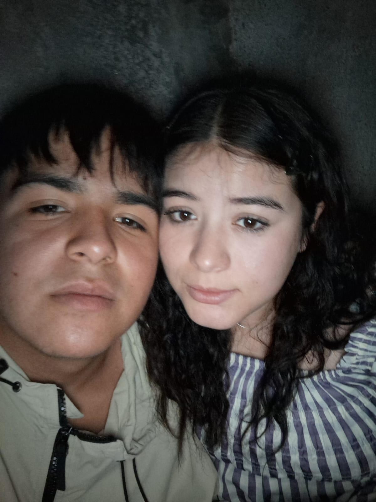

Para: Brisa Karina Palomino Ornelas
De: Leonardo Daniel Collazo Aguilar
Quiero estar contigo para siempre mi vida💕
.jpeg)
Me acuerdo siempre de aquel día en el que nos vimos y me hablaste por primera vez. Nos conocimos de una manera extraña pero muy bonita, y aunque al principio no sabía qué iba a pasar entre nosotros, ahora entiendo que fue uno de los mejores momentos de mi vida. Desde ese día, poco a poco te fuiste volviendo alguien muy importante para mí, alguien que llegó sin avisar pero se quedó en mi corazón. Juro por mi vida que soy el hombre más afortunado del mundo por tenerte a mi lado ♥️ Porque no solo me gustas, me haces sentir cosas que nunca había sentido, me haces sonreír sin razón y conviertes cualquier momento en algo especial. Y si pudiera volver a ese día, volvería a elegir hablar contigo mil veces más 💕 (❁´◡`❁)
.jpeg)
Soy feliz a tu lado, me gustas mucho y quiero que sepas que te amo demaciado, que soy un poquitito celoso, pero no quiero que nadie te aparte de mi lado, te amo, CASATE CONMIGO O QUE ☆*: .｡. o(≧▽≦)o .｡.:*☆

Me gustas mucho y, la verdad, a veces ni yo sé cómo explicarlo completamente. No es solo por cómo te ves, sino por todo lo que eres. Me gusta tu forma de ser, cómo sonríes, cómo haces que incluso los días más simples se sientan especiales. Me gustas porque contigo todo se siente más fácil, más bonito, más real. Porque tienes esa forma única de hacerme sentir bien sin siquiera intentarlo. Me gusta cómo piensas, cómo hablas, y cómo poco a poco te fuiste convirtiendo en alguien tan importante para mí. 💞

Te amo tanto que a veces siento que las palabras se quedan cortas para todo lo que siento por ti. Eres lo mejor que me ha pasado en la vida, y desde que llegaste, todo tiene más sentido, más luz y más felicidad. Tal vez no sea el mejor hombre, pero quiero que sepas que mi amor por ti es sincero y verdadero. Prometo estar siempre a tu lado, en los días buenos y en los difíciles, apoyarte, cuidarte y hacerte sentir lo importante que eres para mí. Porque no solo te amo por lo que eres, sino por cómo me haces sentir… y eso es algo que nunca cambiaría por nada 💖
¿Nos casamos?
la que te dedique en nuestra libreta